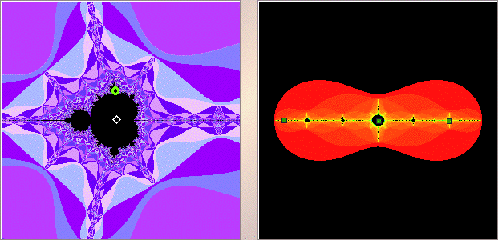

|  |
| The left window shows the midget Mandelbrot set in the window we selected. |
| The white diamond is a point in the cardioid of the midget Mandelbrot set, the right window shows the Julia set corresponding to the selected point. |
| Shift-click or right click near |
| If this appears to be a 2-cycle, the the window does not show the whole Julia set. |
| Click the Zoom Out button to see the whole Julia set, and note this is a 3-cycle. |
| Click the green circle in the right window to see the Julia set for a point in that disc attached to the cardioid. |
Return to Samples.